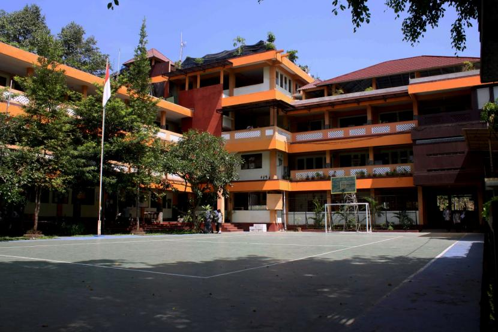
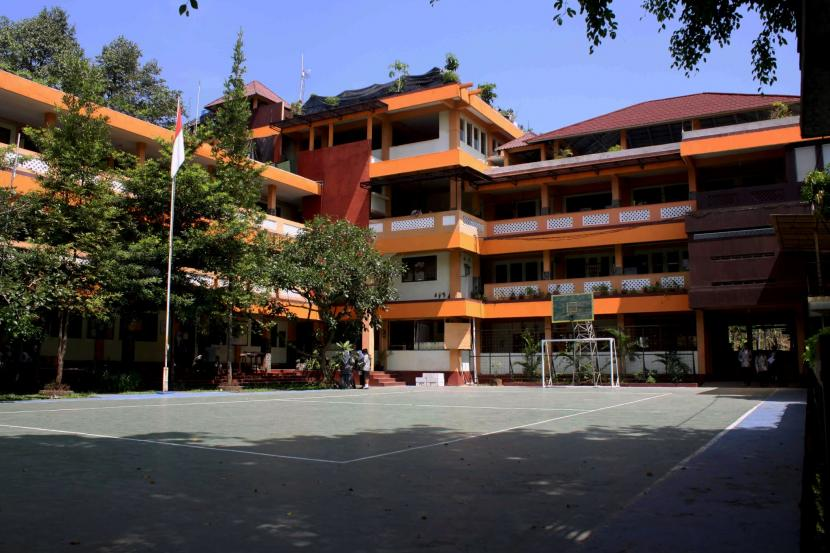

Sejarah SMK Wikrama Bogor
SMK Wikrama Bogor didirikan oleh Ir. Itasia Dina Sulvianti dan Dr.H.RP Agus Lelana dibawah naungan Yayasan Prawitama pada tahun 1996 di bekas gudang KUD. Kompetensi keahlian yang pertama dibuka pada saat itu adalah sekretaris dengan jumlah hanya 34 siswa. Seiring berjalannya waktu, jumlah siswa SMK Wikrama Bogor setiap tahunnya terus bertambah. Sehingga pada tahun 2001, secara bertahap SMK Wikrama Bogor menempati gedung yang lebih luas diatas tanah ± 5000m2, berlokasi di Jalan Raya Wangun Kelurahan Sindangsari Kota Bogor. Kompetensi keahlian di SMK Wikrama Bogor pun terus berkembang. SMK Wikrama Bogor membuka 7 kompetensi keahlian, (1) Otomatisasi dan Tata Kelola Perkantoran; (2) Teknik Komputer dan Jaringan; (3) Rekayasa Perangkat Lunak; (4) Multimedia; (5) Bisnis Daring dan Pemasaran; (6) Tata Boga; dan (7) Perhotelan. Kesuksesan SMK Wikrama Bogor saat ini tentunya tidak lepas dari sejarah SMK Wikrama Bogor mulai dari membentuk visi dan misi, kerja keras hingga diakui dunia internasional hingga prestasi dan pengharagaan yang didapatkan SMK Wikrama Bogor sejak awal didirikan.
 
